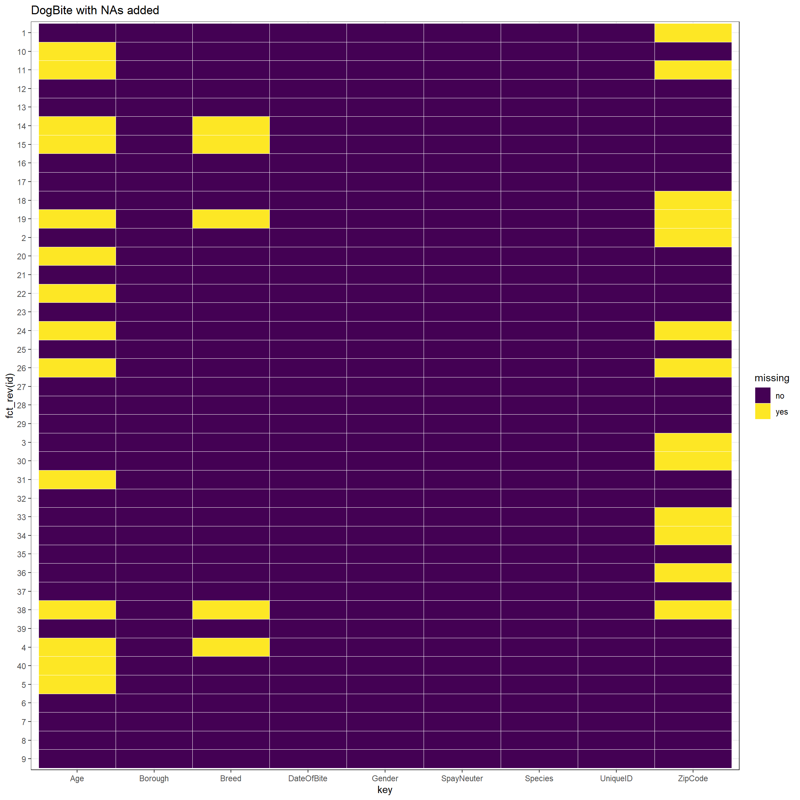
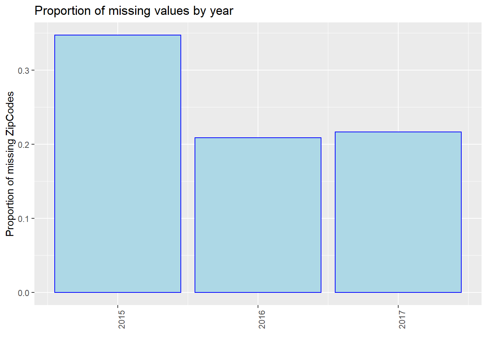
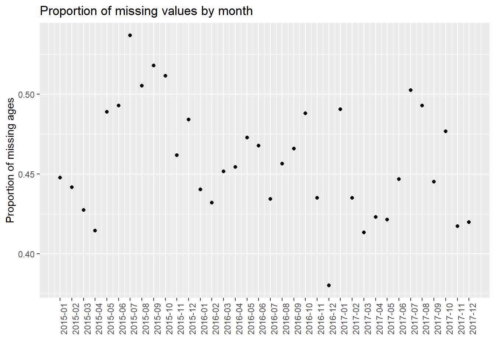
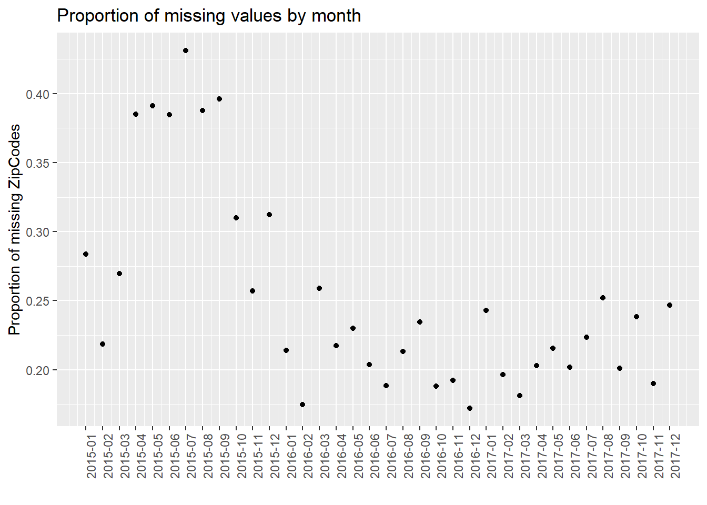

Chapter 4 Missing values
4.1 Read the data
We analyze the missing values of our data “Dog Bite Data” from https://data.cityofnewyork.us/Health/DOHMH-Dog-Bite-Data/rsgh-akpg, which contains 10280 rows and 9 columns. We read the data and show the names of the 9 columns for analysis.
## [1] "UniqueID" "DateOfBite" "Species" "Breed"
## [5] "Age" "Gender" "SpayNeuter" "Borough"
## [9] "ZipCode"4.2 Missing values by column
## Age ZipCode Breed UniqueID DateOfBite
## 4746 2664 1587 0 0
## Species Gender SpayNeuter Borough
## 0 0 0 0First, we show missing values by column. We could conclude that there are most missing values in “Age” while “ZipCode” and “Breed” come second and third. We can roughly analyze the possible reasons. Most of dog owners adopt or purchase their dogs, thus some of them may not be sure of the date of birth. Of course, dogs of some owners are born to the big dog at home, or they know the dogs’ birthday when they purchase them, but some owners are hard to know. This is a very common situation. In addition, many dog owners’ dogs may be hybrid breeds, or stray dogs adopted by owners. In these situations, owners may not be sure of the “breed” of their dogs. As for the “ZipCode”, dog bites may not always happen near the dog owners’ houses, so owners may not be familiar with the “ZipCode” there. Of course, many careful dog owners will inquire and fill in “ZipCode”, but others may not fill in it.
All of other columns do not have any missing value. In class, Prof. Robbins mentioned that we could consider the connection between some columns, such as the address and the zipcode. In our data, we noticed that there is no connection of missing values between “ZipCode” and “Borough” according to the current analysis. We could not see any other connections right now.
4.3 Missing values by row
Since we have 10280 rows, it is not clear if we continue analyzing with all of the data. Our data only contains one file, thus we randomly select 40 rows for analysis.
## [1] 3 3 3 2 2 2 2 2 2 2 2 1 1 1 1 1 1 1 1 1 1 1 1 0 0 0 0 0 0 0
## [31] 0 0 0 0 0 0 0 0 0 0Then we show missing values by row from large to small. We found that rows with the most missing values miss 3 values (i.e, “Age”, “ZipCode”, and “Breed”), while rows with the least missing values miss 0 value. There are only a small part of events in which all three values are missing.
4.4 Row / column missing patterns - heatmap

Now we could show the heatmap to analyze the row / column missing patterns and distributions of missing values. In our heatmap, we discover that the vast majority of rows that miss “breed” and “ZipCode” also miss “Age”. There are only 2 exceptions in our 40 sample rows. One possible reason is that the most easily unknown characteristic of dogs is “age”. If dog owners do not know the age of dogs when adopting or purchasing it, it will be difficult to know in the future. However, the “breed” information can be identified through later medical tests, and “ZipCode” can also be queried after the dog bite events. If not even the easily known information of “breed” and “ZipCode” is available, it indicates that the data has limited information about these dogs and dog bite events, so it is easy to miss “age”.
4.5 Row / column missing patterns - gg_miss_fct
Since most columns of our dataset contain categorical data, it is not proper to analyze row / column missing patterns with mi::missing_data.frame() for heatmaps or with “geom_tile()” for missing values by variable as we discussed in class. In order to better analyze categorical data, we think “gg_miss_fct()” is a better choice. We choose three columns, i.e., “Gender”, “SpayNeuter”, and “Borough”, to analyze the patterns. The plots show the proportions of missing values in different categories of the certain column. Note that we use the entire dataset instead of our 40 samples in this part for better discussion.
In the plot, “F” denotes “Female”, “M” denotes “Male”, and “U” denotes “Unknown”. The plot shows that most events whose “Gender” is “Unknown” miss “Age”, and about half of these events miss “Breed” and “ZipCode”. However, few events whose “Gender” is “Male” or “Female” miss “Age”, “Breed”, and “ZipCode”, and there is no great difference between the patterns of “Male” and “Female”. We could analyze this situation. As we discussed above, the most easily unknown characteristic of dogs is “Age”. If dog owners do not know the age of dogs when adopting or purchasing it, it will be difficult to know in the future. Although “breed” and “ZipCode” are also easily be missed, they are a little easier to be obtained than “Age”. The “breed” information can be identified through later medical tests, and “ZipCode” can also be queried after the dog bite events. However, the “Gender” information can be identified through observations or medical tests easily. If in an event, we do not even know the gender of the dog, it indicates that the data has limited information about these dogs and dog bite events, it is easy to miss “Age”, “Breed”, and “ZipCode”, especially “Age”. In addition, there is not much difference between patterns of missing values in female and male dogs, since the gender will not influence the patterns.
In the plot, “false” and “true” denote the situation of SpayNeuter of dogs. The plot shows that most events whose “SpayNeuter” is “false” miss “Age”, and about half of these events miss “Breed” and “ZipCode”. However, few events whose “SpayNeuter” is “true” miss “Age”, “Breed”, and “ZipCode”. We could analyze this situation. As we discussed above, the most easily unknown characteristic of dogs is “Age”. If dog owners do not know the age of dogs when adopting or purchasing it, it will be difficult to know in the future. Although “breed” and “ZipCode” are also easily be missed, they are a little easier to be obtained than “Age”. The “breed” information can be identified through later medical tests, and “ZipCode” can also be queried after the dog bite events. If in an event, “SpayNeuter” is true, which means the dog is well taken care of and controlled, these careful dog owners are more likely to know the “Age”, “Breed”, and “ZipCode”. By contrast, when it is false, it is more likely to miss “Age”, “Breed”, and “ZipCode”, especially “Age”.
The plot denotes the patterns of missing values in different boroughs. The plot shows that whatever the borough is, it is more likely to miss “Age” than “Breed” and “ZipCode”, which is consistent with what we discussed above. There is one exception. When the “Borough” is “Other”, i.e., we do not know the specific borough, 50% of events miss “ZipCode”. This is reasonable and Prof. Robbins also gave a similar example in class. Since both of “Borough” and “ZipCode” contain the information of the address, there is the connection between them. When we do not know the specific borough, it is likely to miss “ZipCode”.
4.6 Missing patterns
## NOTE: In the following pairs of variables, the missingness pattern of the first is a subset of the second.
## Please verify whether they are in fact logically distinct variables.
## [,1] [,2]
## [1,] "Breed" "Age"## [1] "missing_data.frame"
## attr(,"package")
## [1] "mi"## [1] Age, ZipCode ZipCode nothing
## [4] nothing nothing Age
## [7] nothing Age nothing
## [10] nothing nothing Age
## [13] nothing Age, ZipCode Age, ZipCode
## [16] nothing ZipCode Age
## [19] Age nothing Breed, Age, ZipCode
## [22] Age nothing nothing
## [25] Age Age ZipCode
## [28] Age, ZipCode Age nothing
## [31] Age, ZipCode Age, ZipCode nothing
## [34] nothing nothing Breed, Age, ZipCode
## [37] nothing Breed, Age, ZipCode Breed, Age
## [40] Breed, Age
## 6 Levels: nothing ZipCode Age Age, ZipCode ... Breed, Age, ZipCodeThis part lists the situation of missing values of our 40 samples. Each one indicates the kinds of values that are missed in each sample.
## [1] "nothing" "ZipCode"
## [3] "Age" "Age, ZipCode"
## [5] "Breed, Age" "Breed, Age, ZipCode"This part lists all of the patterns above.
## nothing ZipCode Age
## 17 3 9
## Age, ZipCode Breed, Age Breed, Age, ZipCode
## 6 2 3This part shows the specific counts of patterns above.
Then, we aim to create a missing values plot in the style of extracat::visna() (no longer available on CRAN) using ggplot2. First, we create the function for creating missing plots.
Then we use the function to draw the plot. Note that we use the entire dataset instead of our 40 samples in this part for better discussion.

First, we could analyze the left upper corner of this plot, which sorts the counts of rows that miss certain values. We found that there are most missing values in “Age” while “ZipCode” and “Breed” come second and third. All of other columns do not have any missing value. We can analyze the possible reasons. Most of dog owners adopt or purchase their dogs, thus some of them may not be sure of the date of birth. Of course, dogs of some owners are born to the big dog at home, or they know the dogs’ birthday when they purchase them, but some owners are hard to know. This is a very common situation. In addition, many dog owners’ dogs may be hybrid breeds, or stray dogs adopted by owners. In these situations, owners may not be sure of the “breed” of their dogs. As for the “ZipCode”, dog bites may not always happen near the dog owners’ houses, so owners may not be familiar with the “ZipCode” there. Of course, many careful dog owners will inquire and fill in “ZipCode”, but others may not fill in it.
Second, we could analyze the left lower corner, which shows all of the patterns, i.e., miss nothing, only miss “Age”, miss “Age” and “ZipCode”, miss “Age” and “ZipCode” and “Breed”, only miss “ZipCode”, miss “Age” and “Breed”, only miss “Breed”, miss “ZipCode” and “Breed”.
Third, we analyze the right lower corner, which sort the counts of 8 kinds of patterns we mentioned above. We could conclude that most events miss nothing. Events that only miss “Age” come second. Events that miss “Age” and “ZipCode” come third. Events that miss “ZipCode” and “Breed” is the least. We will analyze them separately.
Most events miss nothing, which shows that the quality of our dataset is good.
Many events only miss “Age”. As we discussed above, the most easily unknown characteristic of dogs is “Age”. If dog owners do not know the age of dogs when adopting or purchasing it, it will be difficult to know in the future. Although “breed” and “ZipCode” are also easily be missed, they are a little easier to be obtained than “Age”. The “breed” information can be identified through later medical tests, and “ZipCode” can also be queried after the dog bite events.
Events that miss “Age” and “ZipCode” come third. As we mentioned above, “ZipCode” is easier to be obtained than “Age”. If in an event, we even do not know “ZipCode”, it indicates that the data has limited information about these dogs and dog bite events, it is easy to miss “Age”. In addition, this also indicate that “Breed” is easier to be obtained than “Age” and “ZipCode”, which is consistent with the left upper corner of this plot.
Events that miss “ZipCode” and “Breed” is the least. As we mentioned above, the most easily unknown characteristic of dogs is “Age”. It is easier to obtain “Breed” and “ZipCode”. If we do not even know “Breed” and “ZipCode”, it is less likely to know “Age”.

In this part, we draw a plot using our function, i.e., plot_missing(DogBiteForPlot, percent = TRUE). The situation is similar to the above plot from plot_missing(DogBiteForPlot, percent = FALSE).
4.7 Missing by borough
## # A tibble: 6 x 4
## Borough num_bites num_na percent_na
## <chr> <int> <int> <dbl>
## 1 Bronx 1757 888 0.51
## 2 Manhattan 2354 1169 0.5
## 3 Brooklyn 2281 1042 0.46
## 4 Queens 2520 1079 0.43
## 5 Staten Island 931 387 0.42
## 6 Other 437 181 0.41First, we show the percent of missing values of “Age” in different boroughs. Note that we use the entire dataset instead of our 40 samples in this part for better discussion. Events in “Bronx” is most likely to miss “Age”. There is not a large difference between the percent of different boroughs.
## # A tibble: 6 x 4
## Borough num_bites num_na percent_na
## <chr> <int> <int> <dbl>
## 1 Other 437 100 0.23
## 2 Manhattan 2354 484 0.21
## 3 Bronx 1757 255 0.15
## 4 Brooklyn 2281 343 0.15
## 5 Queens 2520 331 0.13
## 6 Staten Island 931 74 0.08Now we show the percent of missing values of “Breed” in different boroughs. Events in “Other” is most likely to miss “Breed”. One possible reason is that according to our discussion above, there is a connection between “ZipCode” and “Borough”, which indicates that if we do not know the specific borough, it is more likely to miss “ZipCode”. If we do not even know “ZipCode”, it indicates that the data has limited information about these dogs and dog bite events, so it is easy to miss “Breed”.
## # A tibble: 6 x 4
## Borough num_bites num_na percent_na
## <chr> <int> <int> <dbl>
## 1 Other 437 236 0.54
## 2 Manhattan 2354 848 0.36
## 3 Bronx 1757 463 0.26
## 4 Staten Island 931 239 0.26
## 5 Queens 2520 542 0.22
## 6 Brooklyn 2281 336 0.15Then we show the percent of missing values of “ZipCode” in different boroughs. Events in “Other” is most likely to miss “ZipCode”. One possible reason is that according to our discussion above, there is a connection between “ZipCode” and “Borough”, which indicates that if we do not know the specific borough, it is more likely to miss “ZipCode”.
## # A tibble: 6 x 3
## Borough meanAge percent_na
## <chr> <dbl> <dbl>
## 1 Bronx 4.2 0.51
## 2 Manhattan 4.9 0.5
## 3 Brooklyn 4.6 0.46
## 4 Queens 4.7 0.43
## 5 Staten Island 4.9 0.42
## 6 Other 5.1 0.41
We also explore the relationship between average age of dogs and the missing percent of “Age” in different boroughs. We could roughly infer that the smaller the average age is, the higher the missing percent of “Age” is. However, this relationship is not stable and not obvious.
4.8 Number of missing by year


We process our data and show the number of missing values by year, i.e., 2015, 2016, and 2017. Note that we use the entire dataset instead of our 40 samples in this part for better discussion. We use three plots to show the situations of “Age”, “Breed”, and “ZipCode” separately. We could see that in all of the three plots, events in 2015 miss most values. From 2015 to 2017, the number of missing values gradually decreased in total (especially for “Breed”). However, we are not sure whether this is due to the optimization of management, or because the data contained in our dataset in 2015 is the most. Thus, we show the proportion of missing values by year then.


We found that in the proportion of missing values by year, it is clear that as time goes on, the proportion of missing value has a decreasing trend, especially for “Breed” and “ZipCode”. One possible reason is that the government has strengthened its management of dog bites and put forward higher requirements for data integrity. As a result, there are less missing values in 2017.
4.9 Number of missing by month
For further analysis, we process our data and show the number of missing values by month, e.g., 2015-01, 2015-02. Note that we use the entire dataset instead of our 40 samples in this part for better discussion. We use three plots to show the situations of “Age”, “Breed”, and “ZipCode” separately. We could see that from 2015 to 2017, the number of missing values gradually decreased in total (especially for “Breed”). In addition, the plot has the periodicity, and the number of missing values increases in summer of each year. However, we are not sure whether this is due to the optimization of management and particularity of summer, or because the data quantity. Thus, we show the proportion of missing values by month then.


We found that in the proportion of missing values by month, it is clear that as time goes on, the proportion of missing value has a decreasing trend. One possible reason is that the government has strengthened its management of dog bites and put forward higher requirements for data integrity. In addition, the plot has the periodicity, and the proportion of missing values increases in summer of each year. We do not know the reason now. We will further analyze the time series in our final project to try to solve this problem.